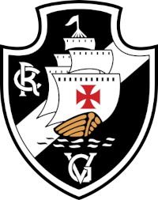
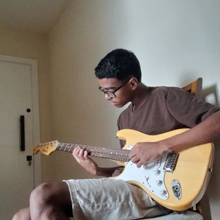

|  |
Torcedor do Gigante da ColinaApaixonado desde que nasci! Infelizmente já sofri muito por esse time mas o amor sempre prevalece. |
MúsicoNunca fui muito interessado na música, mas a convivência com a igreja foi um grande motivo pelo nascimento desse interesse, e, hoje, toco guitarra e contrabaixo por amor à Cristo e também por ser algo que me faz bem! |
 |